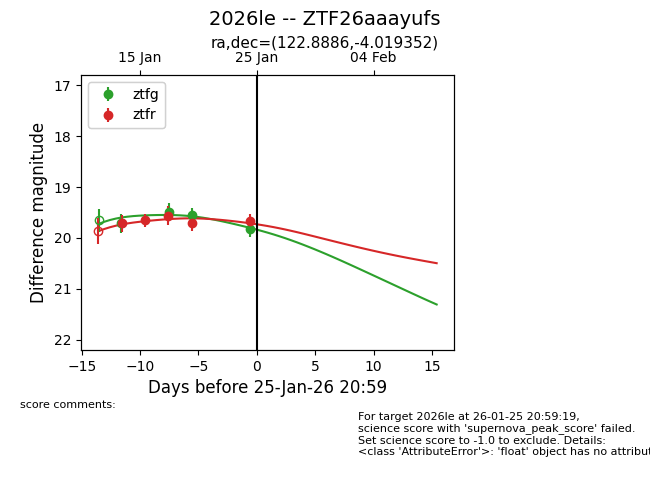
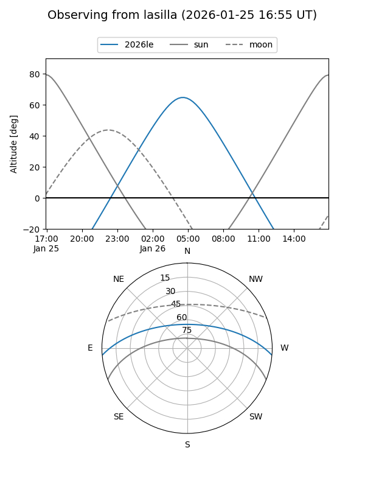
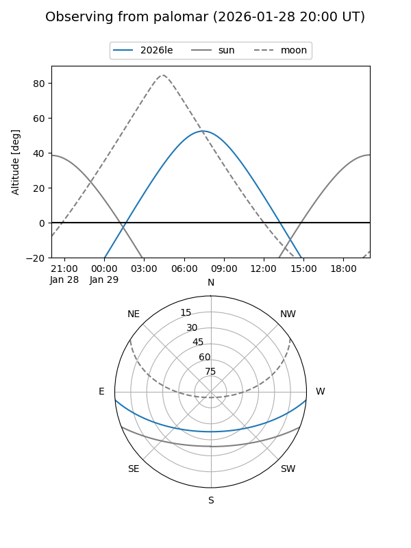
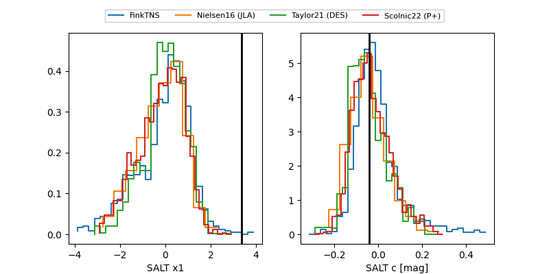

2026le
Target 2026le at 2026-01-16 15:15
Aliases and brokers:
FINK: link
Lasair: link
ALeRCE: link
TNS: link
YSE: link
alt names
ZTF26aaayufs (ztf,fink_ztf)
2026le (tns,yse)
Coordinates:
equatorial (ra, dec) = 122.8886,-4.01935
equatorial (HMS+DMS) = 08:11:33.26,-04:01:09.67
galactic (l, b) = (226.0363,+15.78970)
Flags:
Photometry:
last ztfg=19.71, ztfr=19.66
1 ztfg, 2 ztfr detections
Lightcurve

Visibility


Additional plots
